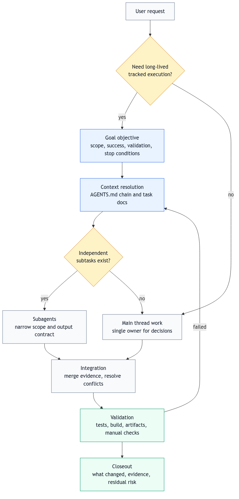

打开项目
在 Codex app 中选择明确项目文件夹，不要从无关的大目录开始。
Codex Usage Guide
这是一份中文优先的网页指南和 LaTeX 手册，帮助零基础用户先跑通最小闭环，也帮助进阶用户系统使用 Goal、subagent、AGENTS.md、本地 skills 和证据化 closeout。
Getting started
第一次使用 Codex 时，不要先追求复杂自动化。先跑通一个最小闭环：选择项目、写清任务、让 Codex 读上下文、执行、验证、看证据。

在 Codex app 中选择明确项目文件夹，不要从无关的大目录开始。
目标、范围、约束、验证。哪怕只写四行，也比“帮我优化”可靠。
要求读取 AGENTS.md、README.md、相关源码或 SKILL.md。
结束时检查 diff、测试、构建、日志、PDF、截图或其它可观察产物。
Prompt contract
在这个项目里做一件事：<目标>。
范围：只改 <路径/模块>，不要动 <排除范围>。
约束：<语言、格式、API、字段、权限、风格等硬约束>。
验证：完成后请运行 <命令/检查>，并告诉我改了哪些文件、验证结果和剩余风险。Goal mode
Goal 不是标题，而是一份执行合同。它适合长任务、跨阶段任务、需要 artifact、验证和 closeout 的任务。
Objective、Scope、Out of Scope、Success Criteria、Acceptance Criteria。
不能改什么、权限边界、输出语言、格式、公开 API、停止条件。
测试命令、构建命令、截图、日志、人工验收、剩余风险。
Objective:
<one concrete outcome sentence>
Scope:
- Include: <paths/modules/tasks>
- Exclude: <explicitly out of scope>
Validation:
- <commands to run>
- <manual checks or artifact checks>
Stop Conditions:
- <when to stop and report blocked>Subagent mode
Subagent 的价值是隔离上下文，把独立探索、测试、日志分析和审查移出主线程。它不是随便并行，必须有明确边界和输出合同。

请用并行 subagents 审查当前分支。
spawn one agent per point, wait for all of them, then summarize.
Agent 1: security risks，只读审查，不改文件。
Agent 2: missing tests，只读审查，不改文件。
Agent 3: maintainability，只读审查，不改文件。
每个 agent 返回 findings、risk level、recommended fix、tests/evidence。Project rules
AGENTS.mdAGENTS.md 是项目说明书。根文件放共识，子目录文件放局部规则。越靠近目标路径的规则优先级越高。
搜索方式、编辑方式、保留 unrelated dirty worktree、禁止 destructive 操作。
列出最窄验证命令：单测、构建、lint、PDF 编译、浏览器检查。
要求最终说明改了哪些文件、跑了什么、失败原因、剩余风险。
# AGENTS.md
## Repository Expectations
- Preserve unrelated dirty worktree changes.
- Use apply_patch for manual edits.
- Prefer rg / rg --files for search.
## Verification
Before claiming completion, report:
- files changed
- commands run
- tests passed or why they could not run
- remaining risksEngineering workflow
grill-me无代码库时打磨 idea、计划和边界，不沉淀项目文档。
grill-with-docs有仓库时边追问边维护 CONTEXT.md 和必要 ADR。
to-prd / to-issues把稳定想法拆成可实现、可 review、可验证的工作单元。
Academic workflow
academic-research-suite面向综述、论文、审稿、实验计划和完整 research pipeline 的总入口。
ask-research本机 AI/ML 论文研究路由器，帮助选择正确下游 skill。
research-grill-me中文主导的论文强门槛流程，重点检查新颖性、实验和 claim 边界。
Local adaptation
本指南提到的 skills 来源不同。Codex app、Codex CLI、worktree、automation 等属于产品或官方能力；ask-research、research-grill-me、部分 Matt Pocock 风格 workflow、本机 goal-entry 和若干 goal-* skills 属于本机安装、本地维护或自写扩展。
SKILL.md，并把不可复现路径标成 local adaptation。
Repository
src/main.texCONTEXT.mdmake pdf